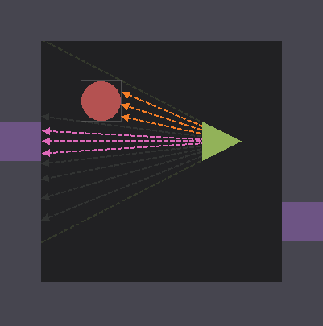
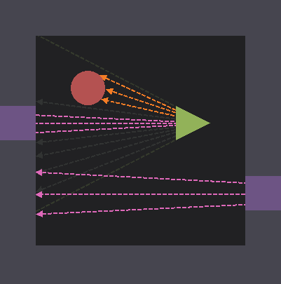

Sirens extends a custom raycasting engine with
complex geometry, texture mapping, and
portals, enabling more variety in gameplay and
puzzle design.
Complex raycasting
Traditional raycasting moves rays along a grid
until they collide with a wall. While performant
and easy to implement, it restricts level geometry
to gridlines and has no way to express additional
behavior.
We revised our rendering pipeline to associate
each tile with a propagation function. This function
determines where a ray appears after travelling
through a tile and reports collisions within it,
allowing tiles to take on multiple shapes, like
cylinders, along with multiple behaviors, like
portals.


Left: Raycasting without complex geometry. Rays can
only intersect with gridlines, and all tiles behave
the same.
Right: Raycasting with complex geometry. Tiles
themselves determine how rays advance, allowing for
fine-grained control over collisions.
Texture mapping
Because the renderer works with discrete pixel
columns rather than vertex data, texture
coordinates had to be calculated manually.
Vertical texture coordinates could be interpolated
along the height of the column, but horizontal
coordinates needed a more involved solution.
Each tile's propagation function is responsible
for calculating the distance traveled, along with
a horizontal texture coordinate on collision. The
renderer then calculates the height of the column
and draws it, passing both texture coordinates
through a custom shader program for sampling.